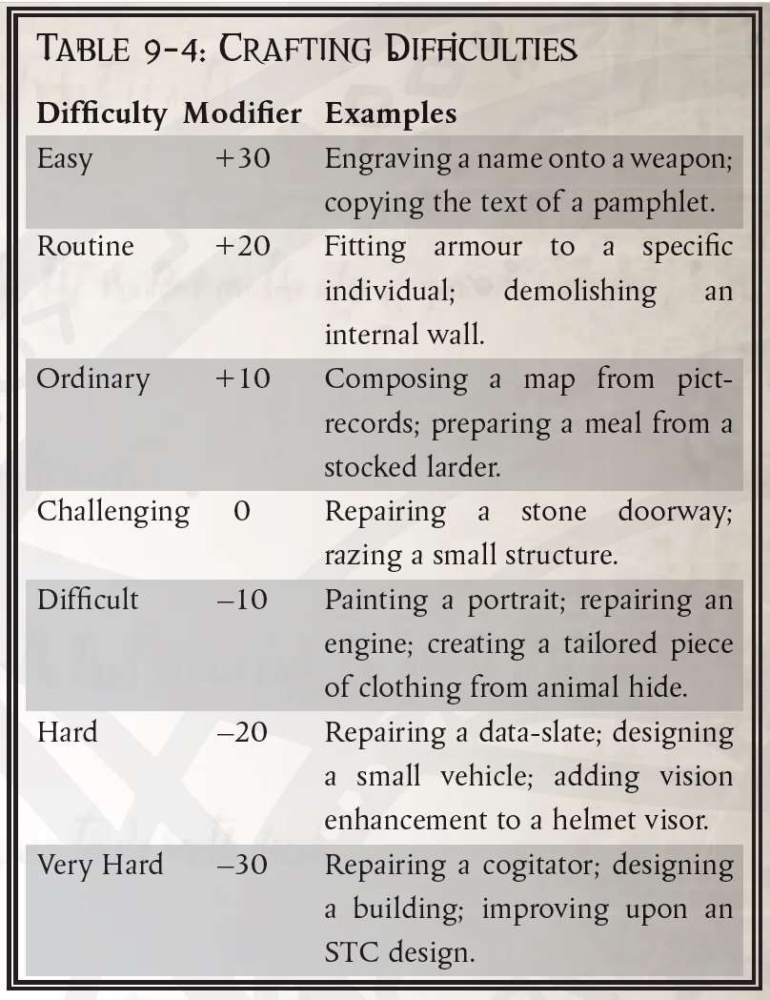
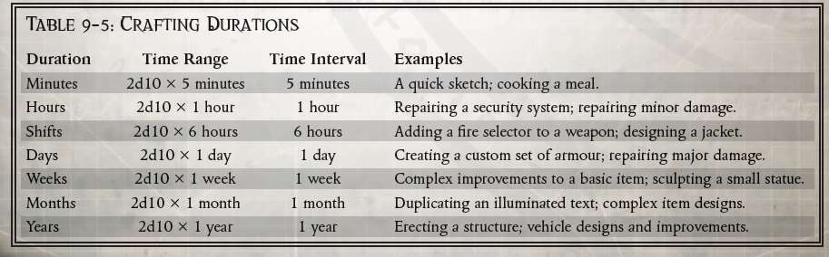
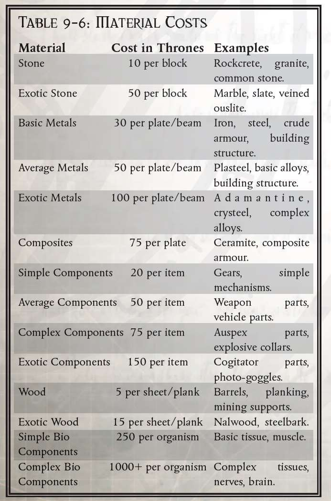
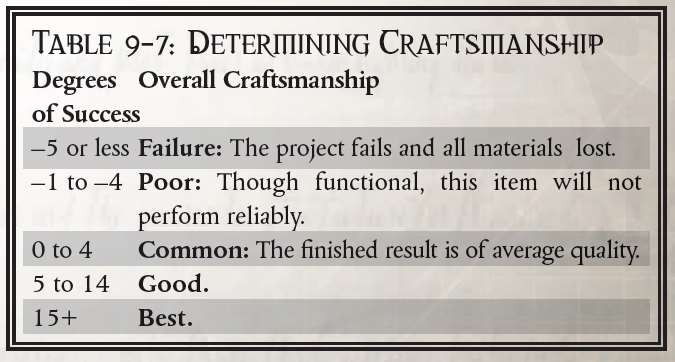

恐慌不仅适用于战斗。如果玩家和 GM 在侍僧获得此天赋时达成一致，则此天赋也可适用于秘密行动、欺骗和战斗。侍僧可将入侵或技术应用（针对安全系统）的难度降低一级，但必须进行意志力检定才能停止篡改。
虽然主要规则中只简单提到，但有口皆碑既适用于传统组织，也适用于激进组织。如果玩家继续协助名声不佳的组织，以暴制暴，则允许他们通过精英进阶来加深这种关系，尽管这种亲密关系被错误的人发现可能会带来可怕的后果。
这是另一个天赋，标准团体的逆转可以带来有趣的情况和出色的角色扮演机会。如果审判庭或帝国组织的一个派系在场景过程中对侍僧有不当行为，可以在游戏结束后为他们提供适当的宿敌天赋。如果他们愿意原谅，他们不必接受这个提议，但如果他们想要报复……
激进派技术神甫可以在开始仪式前选择该天赋的替代用途。你可以选择在下一次对效果范围内任何目标进行的命令或恐吓检定获得+10 的加成，而不是正常效果。
在仪式开始前，技术神甫可以选择以下替代效果：他对半径 50 米范围内的任何个人进行的下一次审讯或恐吓检定获得+10 的额外奖励。
在暗影战争中，此天赋的效果加倍，并将-20 的惩罚适用于所有涉及观察你和研究你的习惯的检定。然而，在你的同伴核心圈之外，其他人可能无法回忆起你的外貌或个性，从而无法有效对抗模仿你的人！
GM 应该将可用天赋组从第 116 页的黑暗异端规则手册中给出的那些扩展到包括以下为对手和敌人天赋给出的那些以及任何适合该战役的群体。通过在错误的人（如异端组织或邪教）中给予侍僧良好的声誉，他们必须平衡他们的两个圈子，这在社交聚会上可能相当复杂，因为两个圈子都可能出现代表。这可以为你的团体提供丰富的角色扮演机会。
天赋组：学者、修女会成员、法务部、机械神教、内政部、星语者、国教、野蛮世界人、政府、巢都人、帝国卫队、帝国海军、审判庭、中产阶级、军队、贵族、底巢、虚空生人、工人。
本质上与“平等待遇”（见《黑暗异端核心规则》第 120 页）相反，该天赋代表与特定社会团体或组织的激烈竞争和敌意。与相关团体互动时，所有社交检定都会受到-10 的惩罚。如果剧情需要，GM 和玩家可以同意授予此天赋。如果玩家采取了适当的行动赢得了团体的信任，那么 GM 可以在精英进阶中移除此天赋。
与“有口皆碑”一样，平等待遇天赋组应扩展到包括你战役中所有必要的组织。通过创造性地使用平等待遇和对手天赋，你和你的玩家可以在权力集团之间建立动态冲突，无论这些集团是否在数量上占优势。
天赋组：学者、修女会成员、法务部、机械神教、内政部、星语者、国教、野蛮世界人、政府、巢都人、帝国卫队、帝国海军、审判庭、中产阶级、军队、贵族、底巢、虚空生人、工人。
与“有口皆碑”（见《黑暗异端核心规则》第 116 页）相反，你特别受到特定社会团体或组织的鄙视。与该团体打交道时，你在社交检定中额外受到-10 点惩罚。此天赋可与“对手”天赋叠加，使总惩罚达到-20 点。
GM 和玩家可以在冒险或战役中酌情决定是否授予该天赋。如果侍僧与相关团体和解，则可以通过精英进阶并在 GM 的批准下移除该天赋。
摘自审判官费尔罗斯·盖尔特的日记，209.702.M40
今天，我在特伦奇的洞穴里击倒了一名冒牌牧师。我面对的牧师口出虔诚之言，但举止傲慢，身上还带着一把沾染了不洁之灵力量的链锯剑。
我三次叫他投降，他三次拒绝。在我代号为 IV 的维生灵能者的帮助下，我制服了他。虽然他失去了战斗力，但我觉得有必要问问他为什么背叛神圣审判庭。
他的回答让我深感忧虑。牧师回答说：“我同为审判庭效力……”
[译者：石盾人]
“你的技艺是来自欧姆尼塞娅的礼物。你的双手与头脑可以创造任何超出你的想象，但有用、美丽或致命的东西。”
——大贤者莫里乌斯，大师级技师。
在每个侍僧的职业生涯中，都会渴望得到一些独特的东西，也许是带有虔诚的金色镶嵌物的紧凑型爆弹枪，或者是从被征服的野兽皮上裁剪出的斗篷。他们甚至可能希望建立一座神殿来纪念以神皇名义牺牲的同志。具有适当技能的侍僧可以使用适当的技能和工具设计和创造这些以及更多东西。
具有制作相关描述的技能与其他技能以不同方式结算。努力的结果不仅在一次骰子测试中难以得知，也可能在很长一段时间内都无法知道。这些是在结合了多种检定结果的扩展检定，可能会需要数天、数周或数月才能完成，而不是简简单单几轮。
新物品的制作可能是一项漫长而令人筋疲力尽的工作。农业工人或雕塑家都可能要辛勤数月才能取得成果。仅仅设计特别复杂的物品就可能需要几个月的时间，更别说打造它们了。当然，耐心的工匠最终可能会得到一件独特的物品，其外观、属性或能力远远超过了低级制作水准下的同行。
同样，你也可能希望对你已有的物品升级功能或改进工艺。
侍僧通过在相应的游戏阶段内，对物品性质的定义来开启他的打造之路。 GM 使用此信息为任务分配难度、持续时间和成本。玩家和 GM 都会考虑各种可能会产生调整因素的各种选择和环境。接下来，侍僧在完成一定时间的工作后会进行适当的技能检定，并决定如何最大限度利用自己的成功。如果一切顺利，侍僧的劳动将造就一件工艺一流的珍贵物品。
为自动手枪添加分弹器与打造定制的力量剑，或者为一群饥饿的追随者做一顿快餐与准备一场值得帝国贵族享用的精美宴会之间存在巨大差异。你必须用具体的游戏术语非常清楚地定义你的目标，这样 GM 才能准确地确定创建项目的难度。玩家应该考虑基本元素，例如基础物品、附加或增强的属性和能力，甚至在某些情况下会降低性能。此外，玩家应该指定与基础物品不同的任何统计数据：重量、特殊品质、护甲点或任何其他符合这项任务的数据。
确保玩家充分定义任务或物品，包括所有游戏效果是 GM 的责任。如果 GM 或玩家在此步骤中遗漏任何内容，则假定它与普通工艺的基本项目相同。
举例
吉斯是一名拥有生计（制甲匠）技能的卫兵，她决定在她的侍僧同伴在附近的行政档案馆进行研究时，将卡梅莱林涂层集成到一套卫队防弹甲中。防弹甲使用了黑暗异端核心规则手册中的所有标准

统计数据，并且涂层将具有与卡梅莱林斗篷完全相同的游戏效果。 GM 认为她恰当地定义了这件物品并继续向下一步推进。
大多数帝国公民都认为科技是神秘的，除了最忠诚的机械教派之外，任何人都无法企及。然而，工匠们弥合了平凡与神秘之间的鸿沟，使他们能够创造出不同于或优于标准的物品。
即使拥有这些技能，也有一些任务是根本不可能完成的，例如用原始部件制造等离子枪或用粗糙的工具改进动力剑。虽然 GM 很容易对玩家的要求说“不”，但你可能会发现这最终会扼杀他们的创造力。更好的选择可能是为制造任务添加一个非常具有挑战性的难度、持续时间或成本，即使成功的几率很低，也允许他们尝试。GM 还应该考虑这项改造会对你战役的平衡产生什么影响。如果你不希望侍僧们挥舞着剑柄内置等离子手枪的动力剑四处冲杀，请立即做出决定，而不是事后试图将这些物品带走。
同时，与侍僧合作，将“常识因素”应用到项目中。如果目标是制造一种轻型、突击型的基本武器，那么将射程加倍实际上没有意义，因为卡宾枪的射程通常比全尺寸的步枪短。增加武器的伤害也会减少每个弹匣的射击次数，从而为更大的子弹腾出空间。
GM 应为侍僧在上一步中定义的任务或物品分配适当的难度、持续时间和成本。确保查看与基本商品不同的因素，例如重量、尺寸和性能。
创建对象的难度与任何其他测试中的难度相同。因此，将两个电池连接在一起以制造更大的电源比修补一个鸟卜仪的内部以扩展其范围要容易得多。表 9-4：制作难度和一些扩展的生计技能描述为将难度分配给项目提供了指导。

除了难度之外，每个任务还具有相关的持续时间。请记住，困难的任务不一定需要很长的持续时间，而简单的任务很可能需要很长时间。矿工挖沟以暴露坚硬土壤中的底层岩石并不是非常复杂，但如果没有帮助，可能需要相当长的时间。
与难度不同，GM 为任务分配一个固定的修改器，持续时间代表一个时间范围，因为侍僧无法预料到他可能会遇到的所有困难——或缺乏的灵感。侍僧应该掷骰 2d10 并参考表 9-5：制作持续时间：
分工合作：对于持续数月或数年的任务，将它们划分为逻辑组件可以让更多工匠专注于最适合他们技能的部分。造船工可以在飞艇的控制系统上工作，而铁匠则可以为船体锻造装甲板。虽然这种技术可以为项目整体节省时间，但它会增加每个部分制作的时间。每个工匠都可以很好地完成他们的个人任务，但他们可能无法更好地融入最终产品。
GM 和侍僧必须共同努力，将工作划分为合理的子任务，尽管 GM 对此过程拥有最终决定权。如果侍僧想要提高他们的陆地车辆的性能，他们可能会同意 GM 的意见，即这可以分为发动机改造和车架/悬挂改造。一旦分开，GM 会为每个子任务分配一个新的持续时间和难度。
定义子任务后，添加一个附加任务以将所有部分组合在一起。该任务的难度与最困难的子任务难度相等。对于每超过两个子任务，难度将增加一个级别。因此，如果将一项挑战性(+0) 任务分为四个子任务，则将它们组合起来的难度将为困难 (–20)。如果这会使难度增加到超过非常困难 (–30)，则工匠必须减少子任务的数量。个人工人的数量越多，最终将它们组合起来就越困难。
确定一个项目的成本可能具有挑战性，尤其是在类似项目的例子很少的情况下，但你会很快掌握它的诀窍。在大多数情况下，确定成本分为两大类：用原材料构建物品或将现有物品组合成混合物品。绘制地图或建造掩体是前者的例子，而建造一把与手持火焰喷射器结合的爆矢枪则属于第二类。
对于新物品是现有物品组合的情况，估算成本相对简单。添加基本物品的成本，然后从表 9-6：材料成本中为组合它们所需的材料添加合理的成本。因此，如果一名侍僧想要在他的甲壳头盔中安装一个鸟卜仪显示器，以便在他的面罩上读取感应数值，那么 GM 可以将这两个项目的成本和一些复杂组件的成本相加。
从头开始构建物品的成本可能需要更多的创造力，但不会令人生畏。关键是从已知的物品开始，对其适当修改。表 9-6：材料成本旨在作为一个起点和指导，而不是一个痛苦的数学练习。如果玩家的追随者正在用钢梁建造瞭望塔，请随意估算所需的钢量，得出合理的成本，而不是苦苦研究结构设计。

举例
GM 审视了吉斯的项目并解释说，由于卡梅莱林技术相当先进，而且在机械神教之外很少有人知道它的工作原理，因此难度将是困难的 (–20)。 由于这是一项复杂的改进，他指定了持续时间为几周。卫队防弹甲的价格是 300 王座币，而卡梅莱林斗篷的价格是 500 王座币。 GM 规定需要 200 个王座币的高级组件才能将两者结合起来，总成本为 1000 王座币。吉斯支付材料费用，然后在时间范围内掷 2d10。她得了 5 和 3，因此估计工作时间为 8 周。 幸运的是，这与她的同伴调查塔苏斯巢都档案的时间差不多。
许多因素会影响任务的难度、持续时间或成本，其中一些可能是环境强加的，而另一些则是由侍僧选择的。其中包括调整持续时间以使任务更容易或更短，以及使用的工具或工作空间以及原材料的质量。
玩家可以自愿将持续时间上调或下调一级，以对难度进行相应的调整。因此，持续时间每提高一级，GM 分配的难度就会降低一级。但是，如果玩家认为该任务将花费更多时间，玩家也可以反其道而行之，将持续时间减少一级，难度增加一级。任何低于“分钟”的持续时间调整都没有效果，任何高于“年”的调整都会将持续时间乘以 2。任何低于简单 (+30) 的难度变化都没有效果，任何超过非常困难 (–30) 的变化意味着该任务超出了侍僧当前的能力范围。
如果助手可以使用具有优秀或极品工艺的工具、工作空间或材料，则项目的难度或持续时间也可以减少。优秀工艺的物品可以进一步降低难度。极品工艺的物品将难度和持续时间降低一级。仅在会影响任务的多个项目的情况下使用最高工艺修正。因此，如果技术神甫可以使用最佳工艺的铸造世界机械教工坊以及优良工艺的原材料，则仅有工坊的修饰生效。
例子
吉斯很幸运能够在西贝柳斯巢都进入一个带有优秀工艺工具的审判庭，这可以将她的任务难度降低到困难 (–10)。她也使用了优秀工艺的防弹甲，但由于她已经应用了工艺加成，它不会再次引发变化。虽然她可以通过将持续时间延长至八个月来降低挑战难度 (+0)，但她认定她的侍僧同伴们将在此之前完成他们的调查。
玩家在表 9-5 所示的时间间隔结束时检定适当的生计技能：制作持续时间。这假设玩家每天花费整整六个小时 - 或整个时间间隔较短的持续时间 - 从事项目。如果玩家当天花费的时间少于规定的时间，那这一天将不计入检定。掷骰成功会使完成工作的时间减少一个时间间隔，但成功或失败的程度为三个或更多会产生额外的影响。
对于每个成功程度，玩家可以将完成项目所需的时间减少一个额外的时间间隔，或者将其用于改进工作的最终工艺。
三或三个以上的故障表明发生了挫折。这既为剩余的持续时间增加了一个时间间隔，又从累积的成功度中减去了一个。请注意，连续失败可能导致成功度的总和为负。
你不能用母猪的耳朵做一个丝绸钱包，也不能用一个来自下巢、工艺水平粗糙的自动伐木枪制作一把极品属性的手枪。一件物品的工艺只能通过重建它来提高。 GM 应该分配比创建现有项目高一级的难度，但要低一级的持续时间，并酌情增加额外的材料成本。现有物品的工艺只能提升一级，无论检定多么出色。
如果 GM 认为这种帮助是可实现的，制作者可以结合他们的努力来完成特别复杂或长期的任务。虽然大量矿工可以很好地在一条新隧道上一起工作，但只有一个技术专家可以合理地工作，以安抚一个小型沉思者的机魂。
这些规则将添加到黑暗异端第 185 页的协助规则中，用于制作和调查。
当几名具有相应行业技能的工人联合起来时，一个被指定为主要工匠，其他人为从属工匠。在计算测试结果时，主要工匠只计算成功或失败，而不考虑成功的程度。然后，每个从属工匠的成功都添加到提升工艺或减少时间的成功度。如果任何人在他的检定中失败了三级或更多，那么除了正常的挫折之外，该时间间隔的所有其他掷骰都被视为失败！你很快就会发现，太多的下属反而会大大减慢进度。
请注意，搬运原材料或矿渣等粗暴劳动不计入合作；只有其他工人的熟练工作才能使用该系统。
审判庭很少允许其追随者有太多空闲时间从事自己的职业，因此他们很可能不得不将任务搁置一边，而帝国的需求占据了他们的时间。只要他们不把事情搁置太久，就不会导致挫折。但是，如果玩家将一项任务搁置的时间等于下一个更高的时间间隔，那么玩家将遭受挫折，就好像玩家在测试中失败了三度或更多度。如果搁置的时间间隔比原来高两倍，该项目将遭受第二次挫折。每个更高的时间间隔都会出现额外的挫折。因此，持续时间为几周的任务在搁置一个月后会遭受第一次挫折，而在被忽略一年后会遭受第二次挫折。对于超过一年的时间间隔，只需将前一个时间间隔翻倍即可。
例子
吉斯每天至少花六个小时在审判庭工作一周，而她的助手们则在行政档案馆工作，并在周末获得测试。她有力量 42 和生计（制甲匠）技能，没有技能熟练加成。吉斯掷出 21，取得了两个成功度。因为她知道自己的时间很短，所以她选择应用它们以进一步减少完成盔甲所需的时间，还有五周的工作要做！
掷骰子最终成功后，工作就完成了。然而，仅仅完成任务并不能告诉你最终结果的质量。在整个任务过程中积累的成功程度有能力产生卓越或劣等工艺的结果。计算分配给改进工艺的总成功程度，减去挫折的数量，然后在表 9-7：确定工艺中查找结果。

有时会出现特别困难的项目，因为很明显，不合标准的结果，甚至失败是不可避免的。如果玩家累积超过五个负成功度，则该项目失败并且其中使用的所有材料都将丢失。玩家也可以在检定期间的任何时候自愿放弃项目，并产生相同的结果。
“混沌仪式”是一个统称,包括各种奇怪的仪式、神秘的公式和怪异的礼仪,通过这些仪式可以召唤亚空间来改变现实,或者召唤亚空间的居民在物理宇宙中爆发。混沌仪式可能以各种形式出现,而且往往是不连贯、恶意且非理性的,它们采用疯狂的公式,并以某种方式破坏现实。这种仪式就像是在无尽的黑暗潮汐中释放的耀斑,目的是吸引恶魔的注意,并帮助它们穿过面纱,或者用于创造特定需要以扭曲物理法则,释放出神秘的能量,这些能量可以由仪式的指挥者为了自己的目的进行控制和引导。亚空间仪式是非常危险的事情,其潜在范围仅受人类堕落的想象力和毁灭力量本身永恒的恶意所限制。
在游戏术语中,混沌仪式往往是为了达到特定效果。某些仪式可能用于召唤恶魔、附身于不情愿的受害者、联系某个实体以达成黑暗契约、用邪恶力量污染一片区域、预言未来、复活死者,或者干脆撕裂现实让恶魔为所欲为……这种仪式不胜枚举。一般来说,要实现的效果越复杂、越强大,仪式就越难完成。
仪式需要时间和准备才能进行,成功完成仪式存在许多困难。这些困难要么是由于对特定组件(稀有物质、牺牲品等)的要求,要么是由于其他更神秘的需求,例如特定的占星排列、必须使用特定地点等。当然,另一个值得一提的困难是敌对势力的行动,即帝国当局和神圣审判庭。吸引他们的注意力确实会让邪恶的邪教徒们日子不好过!
由于用途五花八门,混沌仪式很少有固定的形式。然而,人类的痛苦和死亡是大多数仪式不可或缺的一部分(释放情感和灵能对于亚空间生物而言就像肉和酒对人一样重要),而魔法师们有时所说的“共情法则”也经常适用。也就是说,人们会使用具有共鸣能力的物品和仪式来帮助创造理想的效果。例如,召唤腐化之主恶魔的仪式可能需要使用腐臭的内脏、生锈的工具以及患病和受污染的祭品——所有这些对象都与被召唤生物的本质产生共鸣。或者,仪式的结构可能有助于削弱现实与亚空间之间的屏障。在这种情况下,仪式中可能会使用致幻药物、曲折的咒语和麻木的恍惚来使受祝者的思想与超自然景象相协调,这些景象可能会通过旁观者破裂的突触显现,以物理形式出现。
控制恶魔并非易事,因为即使是那些可能响应邪教导师召唤的较小实体,也是恶毒的狂暴生物,它们宁愿把人撕成碎片来取乐,也不愿为人类服务。为了控制召唤出的恶魔,召唤者和被召唤的实体之间会进行一场灵能意志之战,以“意志力对抗检定”的形式进行,并需要采取“完整动作”才能完成。本检定根据表 4-2:召唤仪式修正值、恶魔在场情况以及其他相关因素进行修正。
如果召唤者获胜,他就可以命令恶魔听从他的命令。请注意,它会听从召唤者的口头(或心灵感应)指令。
如果召唤者未能通过检定,那么恶魔就可以为所欲为,通常会先向召唤者发泄怒火。
恶魔是思维异类且不可信任的生物,明智的做法是召唤它们去做它们最擅长的事情——杀戮。如果恶魔被迫以某种方式违背其基本本性,它可能会试图打破召唤者的控制,迫使进行第二次掌控检定,对控制者的修正值为-30。
虽然大多数情况下,NPC 驱动的仪式除了作为游戏中的叙述外,不需要严格的定义,但 GM 为了描述的目的,更清楚地描述它们可能会很方便(特别是当侍僧试图破坏仪式,甚至自己执行仪式时!)。因此,我们提供了混沌仪式模板。